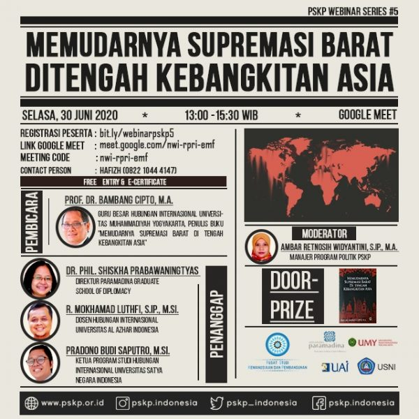

- Home
- Latest Post
- Media
- Publikasi
- Kegiatan
- Karir
(TELAH SELESAI) Webinar Series #5 Memudarnya Supremasi Barat Di Tengah Kebangkitan Asia
 Pusat Studi Kemanusiaan dan Pembangunan (PSKP) mempersembahkan :
Webinar Series #5. Kali ini, webinar PSKP akan membedah buku Memudarnya Supremasi Barat di tengah Kebangkitan Asia.Adapun detail acara sebagai berikut :
Hari/Tanggal : Selasa, 30 Juni 2020
Jam : 13.00-15.30 WIB
Tempat : Google Meet
Pembicara :
Prof. Bambang Cipto, MA: Guru besar Hubungan Internasional Universitas Muhammadiyah Yogyakarta, penulis buku Memudarnya Supremasi Barat Di Tengah Kebangkitan Asia.
Narasumber:
1. Dr. Phil. Shiskha Prabawaningtyas: Direktur Paramadina Graduate School of Diplomacy.
2. R. Mokhamad Luthfi, S.IP., M.Si.: Dosen Hubungan Internasional Universitas Al-Azhar Indonesia.
3. Pradono Budi Saputro, M.Si: Ketua Program Studi Hubungan Internasional Universitas Satya Negara Indonesia.
Moderator :
Ambar Retnosih Widyantini, S.IP., M.A (Manajer Program Politik PSKP)
Webinar ini gratis & terbuka untuk umum
Tersedia : E - Sertifikat
Link Registrasi Peserta :
bit.ly/webinarpskp5
Link Google Meet :
meet.google.com/nwi-rpri-emf
Contact Person :
Hafizh (082210444147)
*NB: Harap cantumkan alamat email dan nama lengkap Anda dengan benar ketika melakukan registrasiRELATED POSTS
- All
- Kegiatan
- Publikasi

 Categories: Kegiatan
Categories: Kegiatan - Publikasi